Abstract
All-to-allv is a commonly used collective and a significant performance bottleneck in HPC and distributed deep learning. DL workloads in particular exhibit highly skewed data-size distributions, dynamically changing communication, and large messages — all of which make all-to-allv hard to optimize.
We present SABRE, a Skew-aware All-to-allv library for Balancing irRegular communication on GPU-based clusters. SABRE performs well under both highly-skewed and lightly-skewed patterns, selecting different optimization strategies in each regime. Through imbalance detection, adaptive algorithm selection, careful backend selection, and memory-management optimizations, it achieves up to 2.4× speedup over Cray MPICH and NCCL in microbenchmarks, and improves Mixture-of-Experts training time by up to 1.8× over the default PyTorch implementation.
Key Contributions
Provably optimal balancing
We derive a tight lower bound for highly-skewed all-to-allv — achieved when each node spreads send/receive traffic evenly across its NICs — and a practical approximation via intra-node gathering, inter-node grouping, and redistribution.
Pipelined 2D algorithm
For lightly-skewed traffic, a pipelined two-dimensional all-to-allv overlaps intra-node and inter-node communication to maximize bandwidth while controlling network congestion.
Runtime skew detection
A maximum-to-mean (MTM) ratio classifies every all-to-allv invocation as highly- or lightly-skewed and dispatches it to the right algorithm — adapting to MoE routing that changes each iteration.
Real, drop-in speedups
Up to 2.4× over Cray MPICH and NCCL in microbenchmarks and 1.28–1.79× end-to-end in Megatron-LM MoE training — via a Python API that replaces dist.all_to_all_single.
Why Existing All-to-allv Falls Short
GPU supercomputers have far higher intra-node bandwidth than inter-node bandwidth, and MoE traffic is skewed and dynamic. Static and scheduling-based algorithms can't handle both at once.
Static algorithms
Fan-out, spread-out, and Bruck variants assume uniform bandwidth and fixed schedules. They can't exploit fast intra-node links, and the busiest rank becomes a long-tail bottleneck. Bruck's extra traffic is counterproductive for MB–GB messages.
Scheduling algorithms
TACCL/FAST compute near-optimal schedules but cost seconds to over an hour (TACCL: >1h for 64 GPUs). A single transfer finishes in milliseconds, and MoE routing shifts every iteration — there's no schedule to reuse.
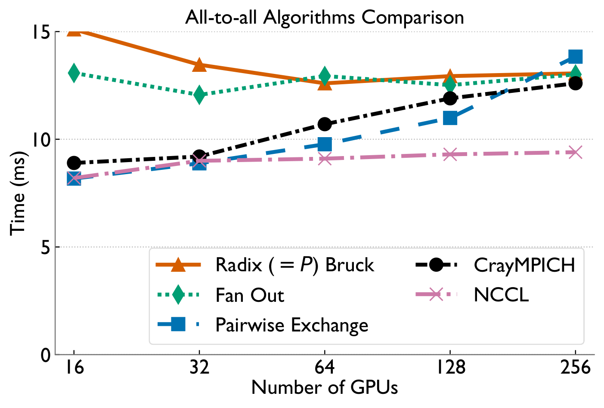
One Adaptive Library, Two Regimes
SABRE measures imbalance with a single scalar — the maximum-to-mean (MTM) ratio — then dispatches each call to the algorithm best suited to its skew.
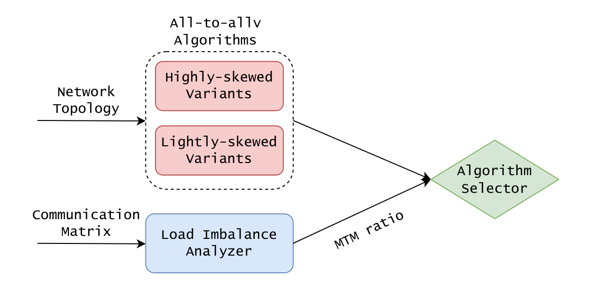
For each rank, let si/ri be the inter-node data it sends/receives. MTM = max(Send-MTM, Recv-MTM), where each is the peak volume normalized by the per-process mean. A higher MTM means more severe skew — and it's cheap enough to compute on every invocation.
Highly-skewed
- A few NICs carry most traffic; the rest idle
- Bottleneck = the most-overloaded NIC (long tail)
- Fix: balance each node's send/receive evenly across its NICs
Lightly-skewed
- Most processes send similar volumes
- Bottleneck = inter-node congestion from many concurrent flows
- Fix: overlap intra-/inter-node phases, group transfers
The Two Algorithms
Highly-skewed: provably optimal NIC balancing
We prove that completion time is bounded below by TLB = max(maxu Su/mC, maxw Rw/mC) — the heaviest node draining all its data through its m NICs. Spreading each node's traffic evenly across its NICs achieves this bound exactly (T★ = TLB), making equal-spreading globally optimal, not just a heuristic.
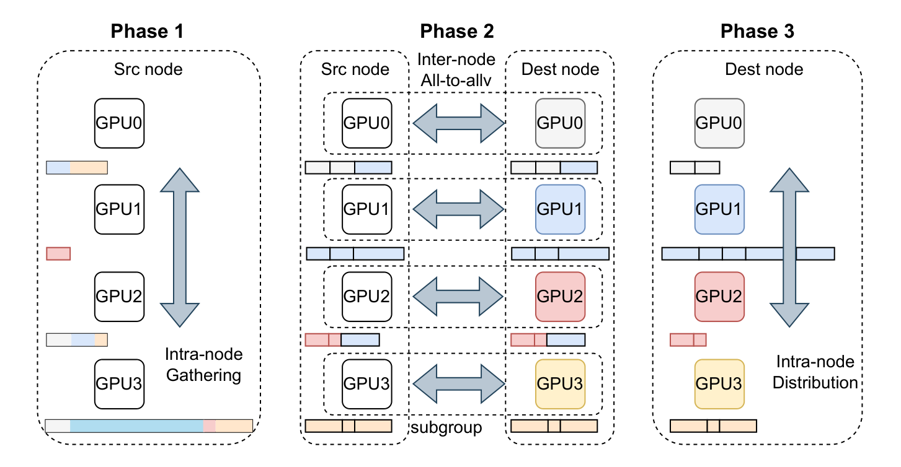
Lightly-skewed: pipelined 2D overlap
When traffic is balanced, the enemy is congestion. SABRE partitions the system into a 2D mesh and overlaps intra-node forwarding with inter-node exchange, using abundant intra-node bandwidth to relieve pressure on the network fabric while grouping inter-node messages.
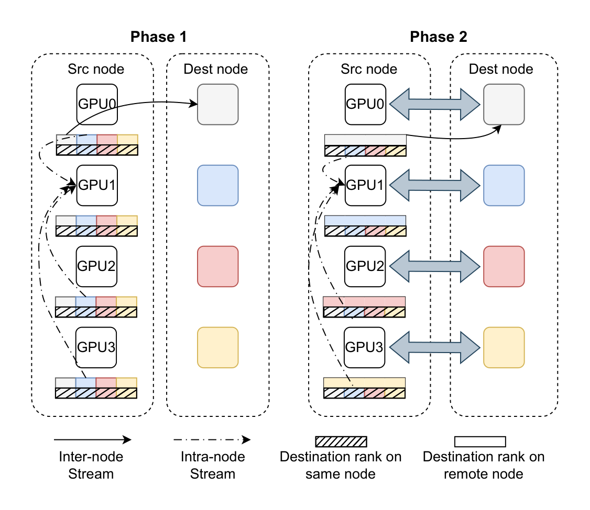
Performance on Perlmutter
Evaluated on Perlmutter (4× A100 + 4× Cassini NICs per node) using realistic communication matrices extracted from MoE training jobs.
Highly-skewed all-to-allv
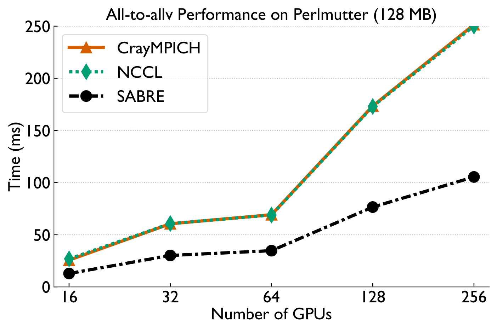
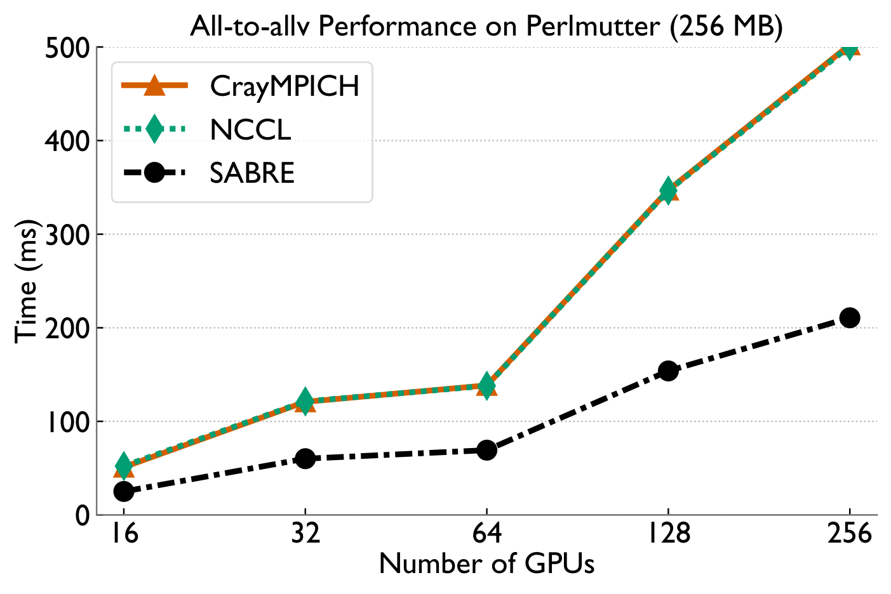
Lightly-skewed all-to-allv
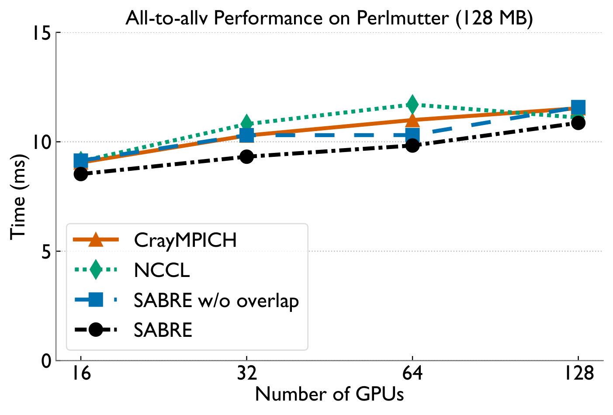
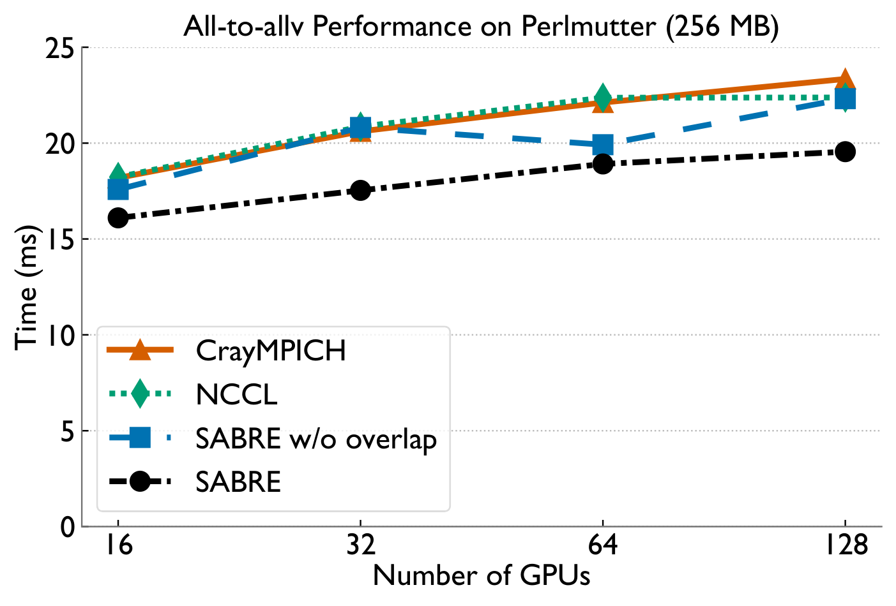
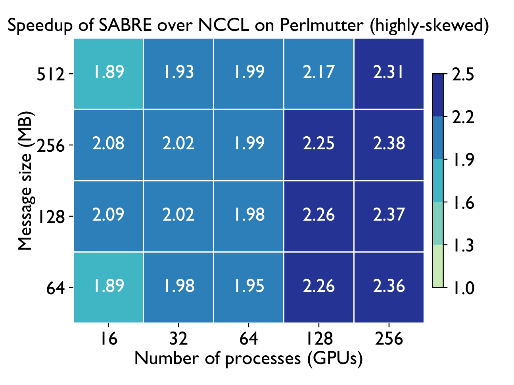
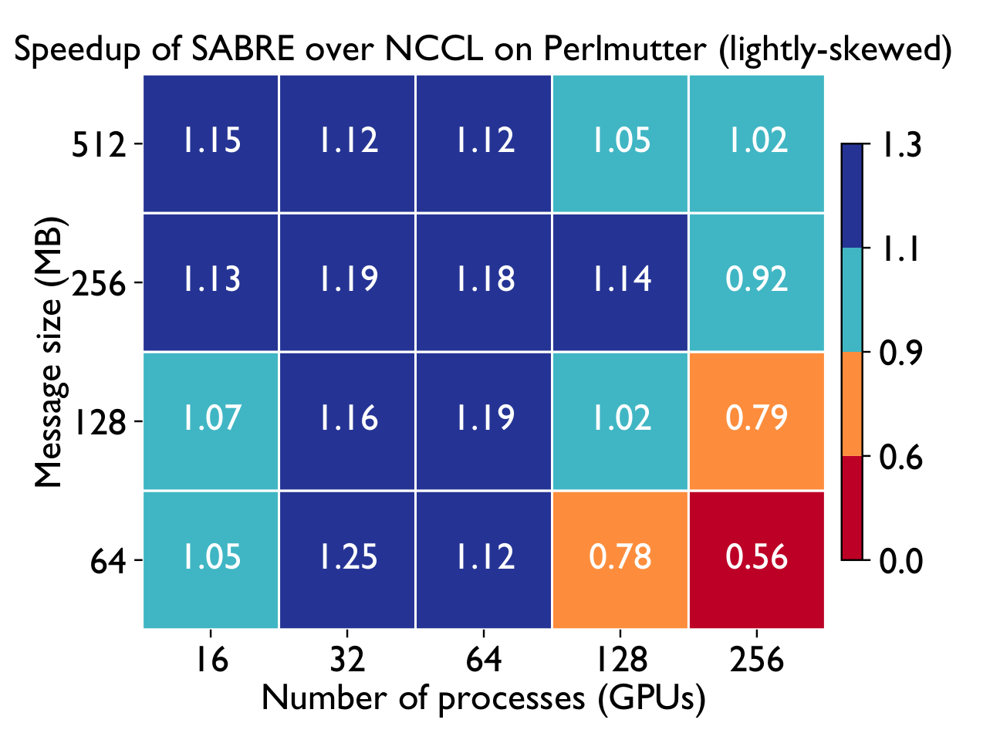
End-to-end MoE training (Megatron-LM)
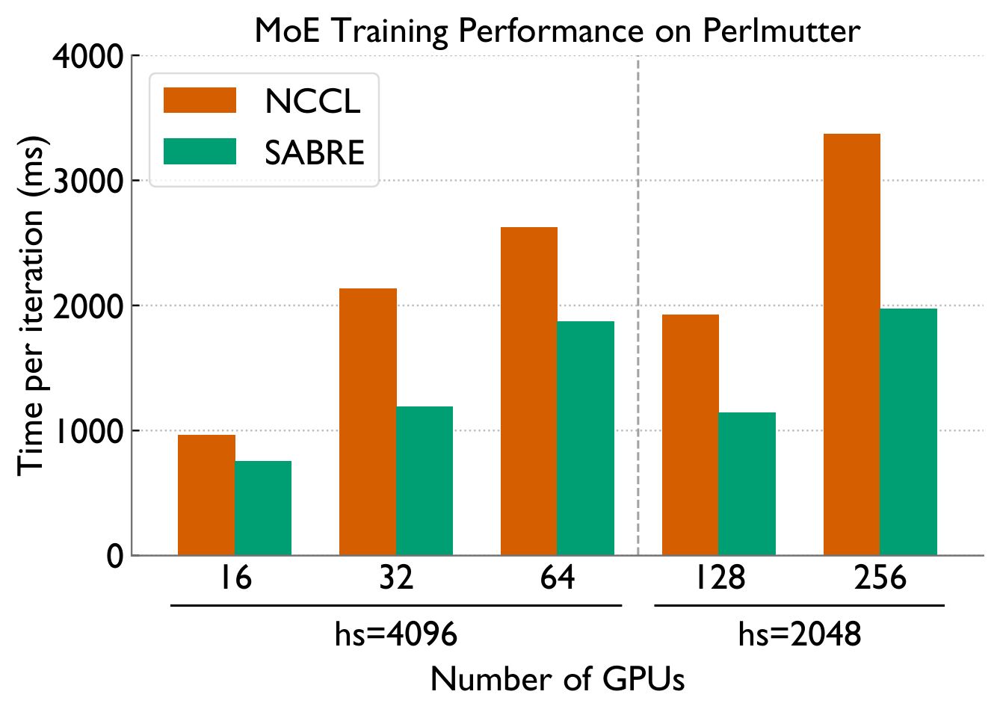
Bottom line
All-to-allv bottlenecks in MoE training come from two distinct sources — NIC-level load imbalance under skew, and inter-node congestion when balanced. SABRE detects which regime it's in via the MTM ratio and applies a provably-optimal balancing scheme or a pipelined 2D overlap accordingly, achieving up to 2.4× microbenchmark and 1.8× end-to-end speedups on Perlmutter as a drop-in replacement for PyTorch all-to-allv.
BibTeX
@inproceedings{wei2026sabre,
title = {Skew-aware Adaptive All-to-allv Algorithms for
Dynamic Deep Learning Workloads},
author = {Wei, Cunyang and Bhatele, Abhinav},
booktitle = {Proceedings of the 2026 International Conference on
Supercomputing (ICS '26)},
year = {2026},
doi = {10.1145/3797905.3800541}
}